Architecture
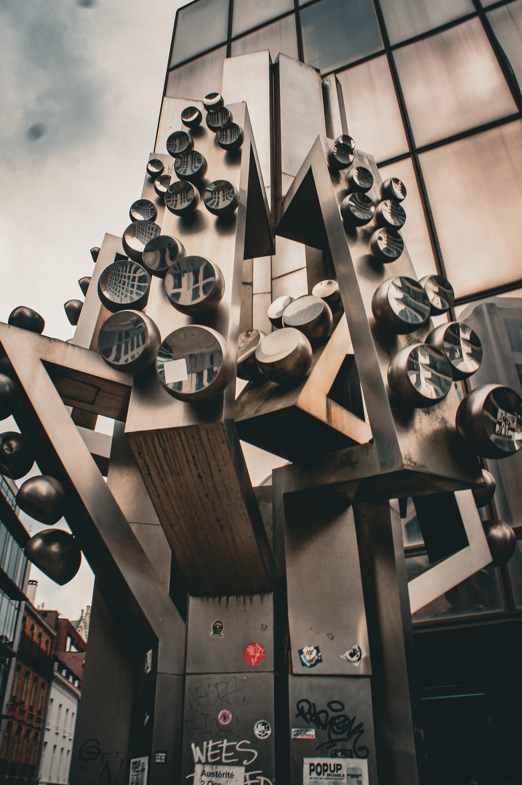

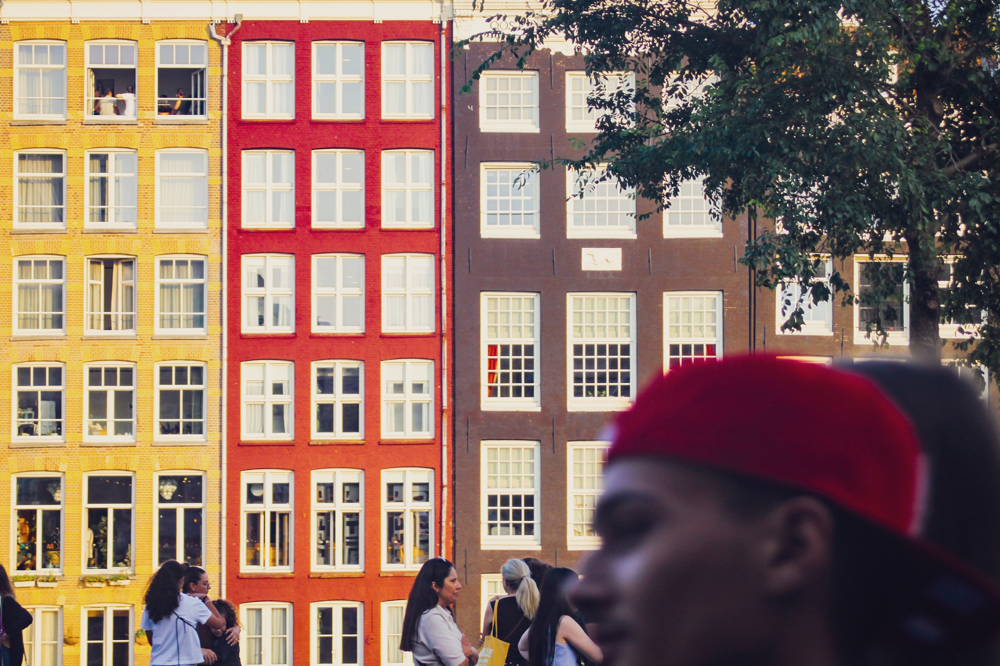

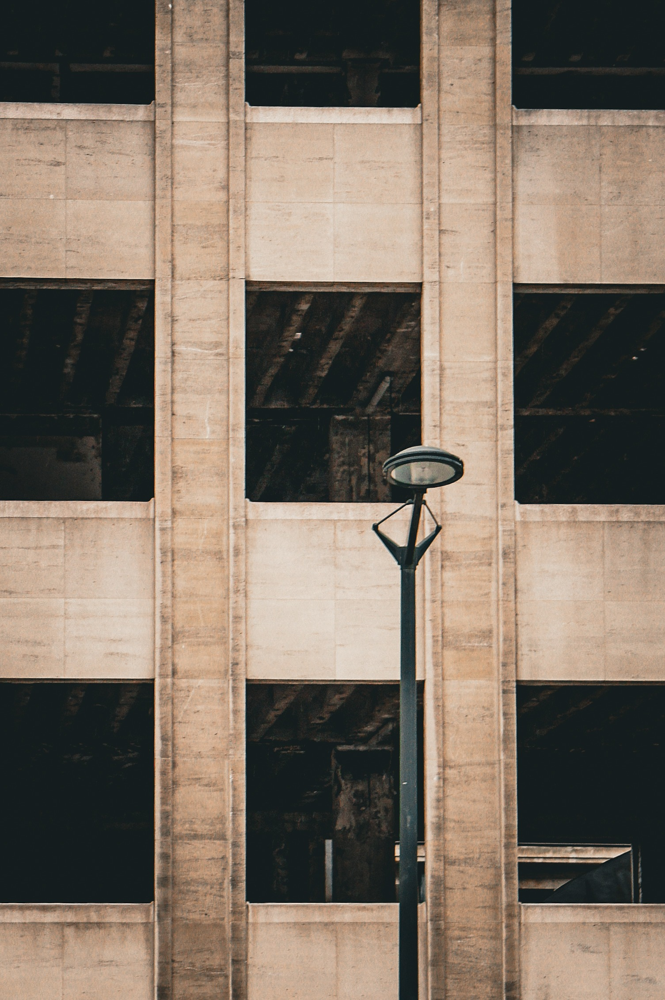
L’Urbain vue de près

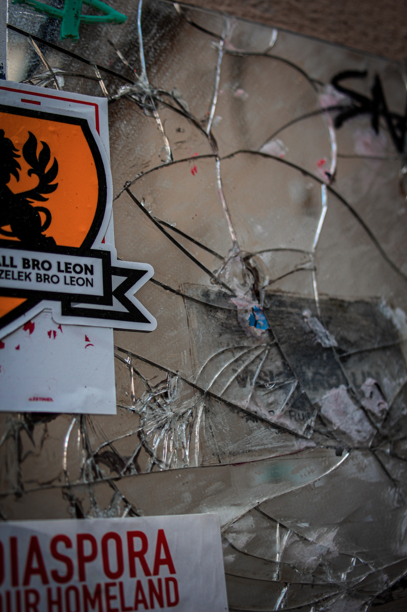
Les Transports


Portraits
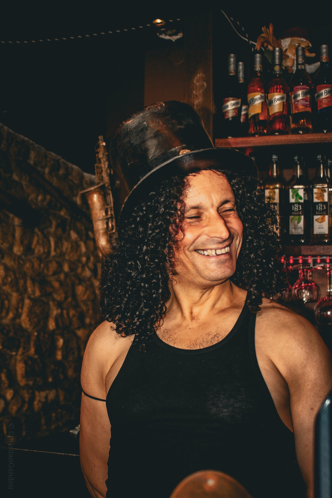


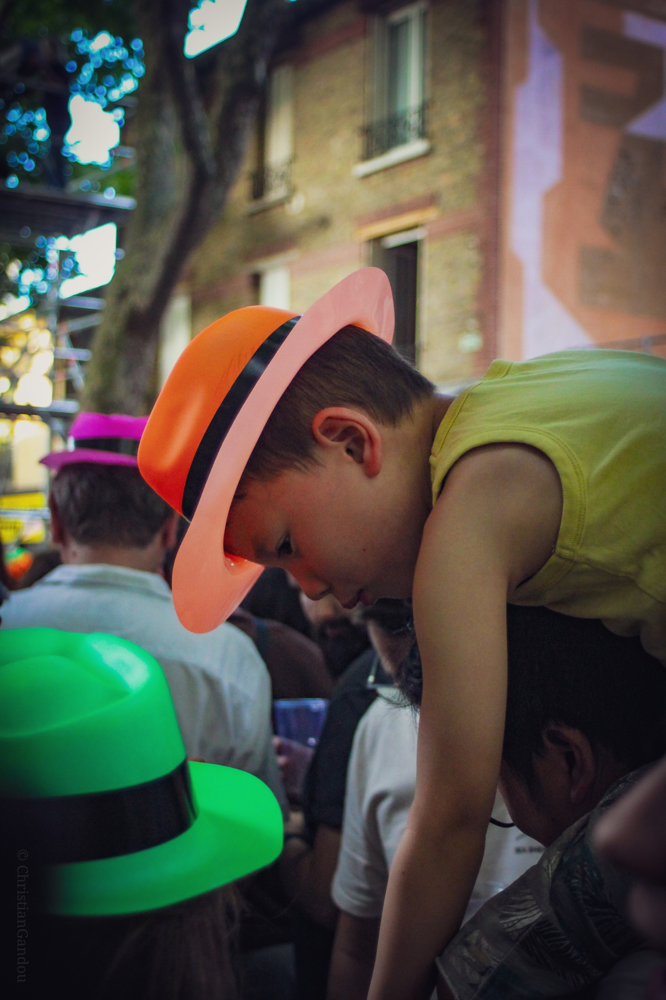


Portraits de rue

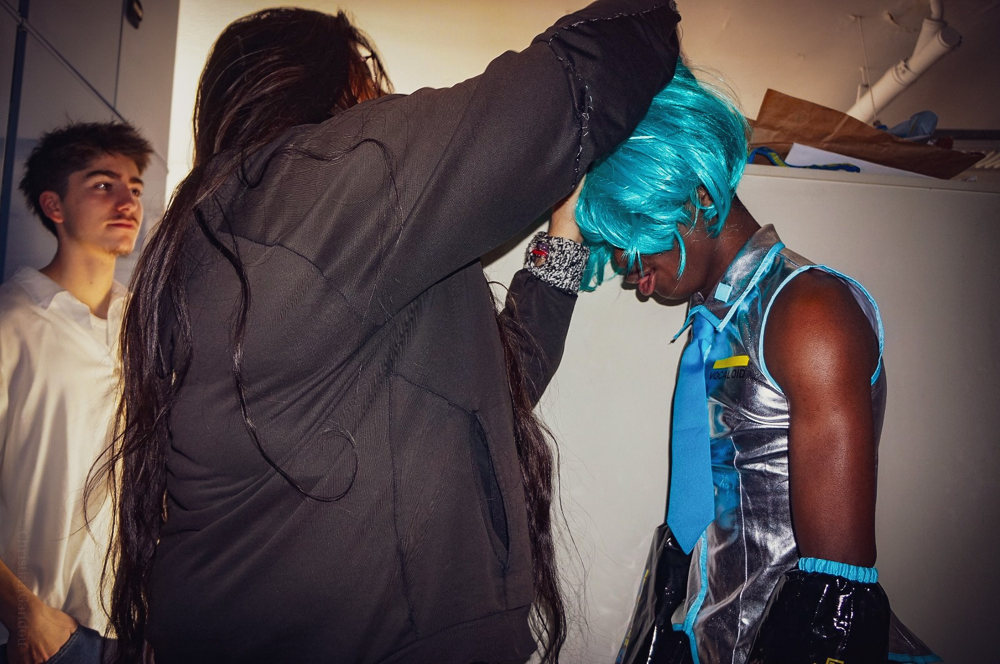

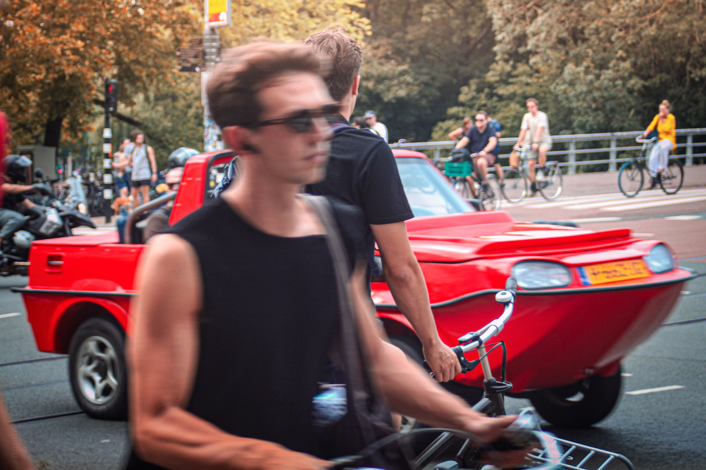
À la montagne !


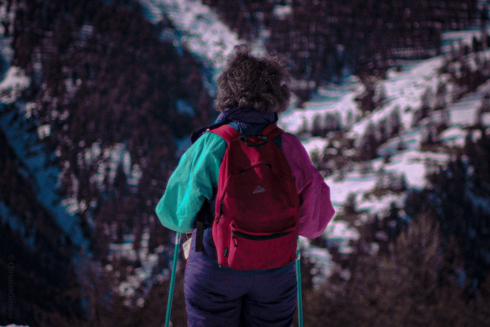
Jouer avec la lumière

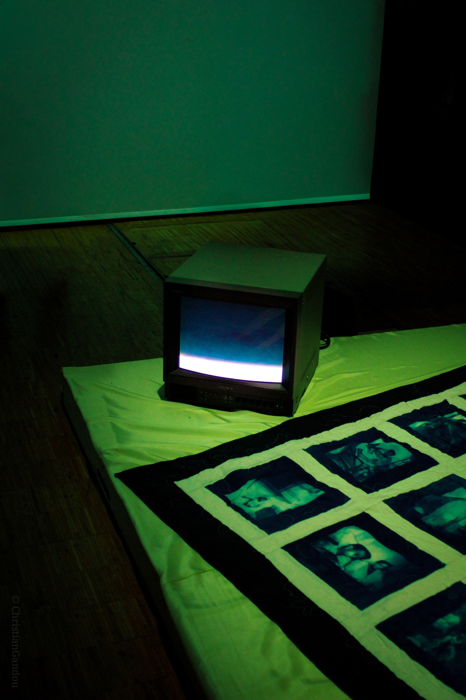
Jouer avec l’obscurité

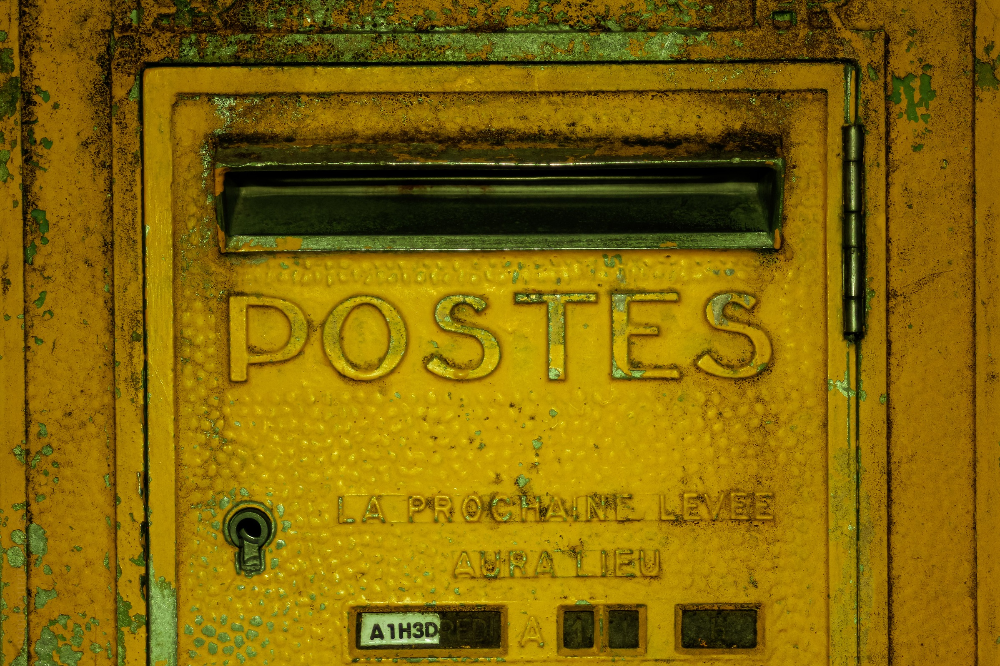


Envie d’un shooting ? Retrouvez mes séries sur Instagram ↗